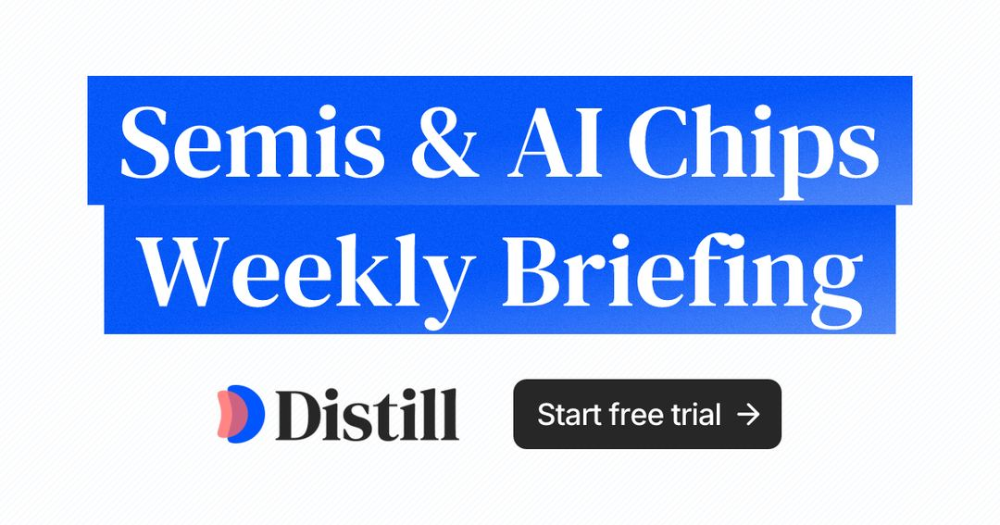
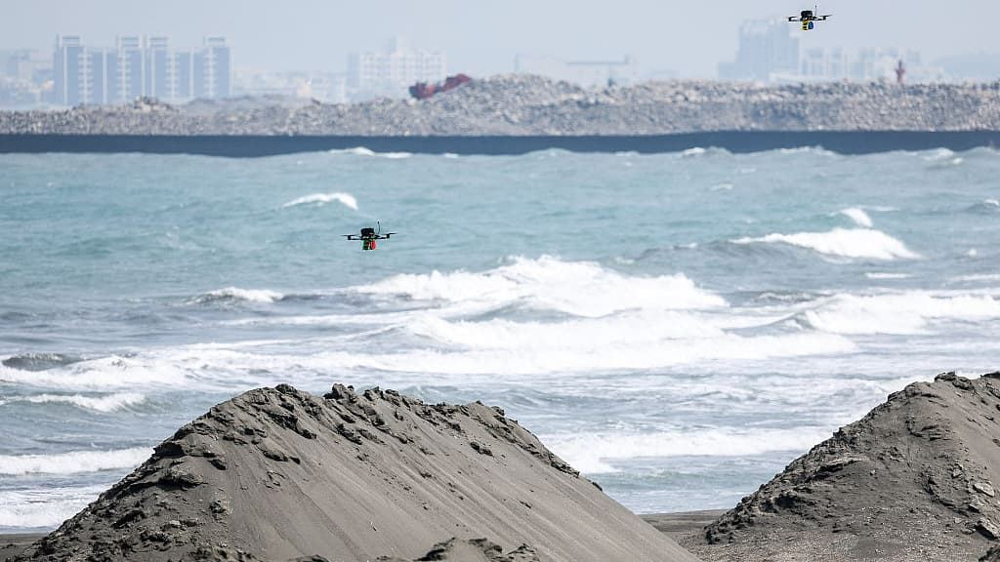

国内热榜 · 精选
全球实时
AI 与 Agent 圈
8 条Anthropic 以 813 亿美元创纪录 IPO 登陆 Nasdaq，三强新模型十天内连发、Agent 进入治理时代
本月 AI 圈被资本与模型双线点燃：Anthropic 成为首家上市的前沿实验室，OpenAI、Google、Anthropic 在十天内连发 GPT-6.2、Gemini 4 与 Claude Fable 5.2 并打起价格战。与此同时，Microsoft 披露 Agent 365 已登记超 5000 万个 Agent，HN 与 GitHub 的讨论显示开发者正转向多 Agent 并行、记忆与技能（skills）生态，本地推理也因 Apple Harbor 再起热潮。
Anthropic 创纪录 IPO 登陆 Nasdaq，首日开盘大涨
Anthropic 于 11 月 18 日以每股 83 美元定价（高于 70–78 美元区间），发行约 9.8 亿股、募资约 813 亿美元，超越 SpaceX 成为史上最大 IPO，11 月 19 日以代码 ANT 在 Nasdaq 交易。报道称其完全稀释估值约 1.5 万亿美元，首日开盘 111.5 美元，Claude 与 Claude Code 的企业需求是增长主线。

十天三强连发：GPT-6.2 解锁网络安全能力，Gemini 4 大幅降价
OpenAI 11 月 17 日发布 GPT-6.2 Astra 与 Sol，Astra 定价 $8/百万输入 token、较前代便宜 20%，并带上此前仅限受审安全客户的网络安全能力；Google 11 月 18 日发布 Gemini 4 Neon，仅 $3/百万输入 token、不到对手一半，在法律与税务基准居前。PYMNTS 称 Alibaba Qwen4-Max 与 Tencent Hy4 Flash 同周跟进，单任务成本继续下探，前沿竞争转向性价比。
Microsoft Ignite 2026：Agent 365 已登记超 5000 万个 Agent，主推治理与 ROI
Microsoft 在 Ignite 2026 扩展 Agent 365 可观测平台，称自 2026 年 5 月上线以来组织已登记超 5000 万个 Agent。新功能包括 Agent 365 Business Analytics（使用量、支出预测与价值建议）、为 Google、Salesforce、Anthropic、OpenAI 等多平台 Agent 发放 Entra Agent ID、动态 Agent 风险视图与多租户管理，企业 Agent 竞争焦点从部署转向身份、风险与成本治理。

HN 热帖拆解 663 条评论：Claude Code 领跑，开发者普遍多 Agent 并行
11 月 4 日 Ask HN「你的 AI agentic setup 是什么」引发大量回复，分析方逐条统计 530 位参与者、424 位点名工具者：Claude Code 以 180 人居首，Codex 103 人次之，156 人同时用两个以上编码 Agent，148 人使用 DeepSeek、Qwen、GLM、Kimi 等开放权重模型。常见模式是多 Agent 各占一个 git worktree、引入独立 reviewer 复核、并用 VM/容器隔离无人值守的 Agent。

GitHub 11 月趋势：Agent 记忆、技能与控制面仓库霸榜
基于 GitHub API 在 11 月 9 日的统计，趋势榜被 Agent 基础设施占据：thedotmack/claude-mem 为编码 Agent 提供跨会话记忆，pingdotgg/t3code 做多 Agent 控制面，cloudflare/security-audit-skill 与 Nutlope/hallmark 等技能类仓库快速涨星，vercel-labs/agent-browser 提供浏览器自动化 CLI。社区共识是 Agent 生态正从框架转向记忆、skills 与编排层。

Apple Harbor 曝光：把 Mac 变成私有本地 AI 服务器，可多机组集群
Apple 子公司 Claris 正在私测 Harbor：让 Apple silicon Mac 本地运行开放权重模型，数据不出硬件；多台 Mac 可经 Thunderbolt 5 互联、池化统一内存以跑更大模型，应用内可直接浏览、下载与加载模型且无需命令行。消息经 X 泄露后在 r/LocalLLaMA 与 HN 引发热议，本地推理的易用性与高硬件成本成为争论焦点，目前仍为 private preview。

MIT 研究刷屏三社区：GPT-6 Astra 直接改另一个模型的权重，无需训练
11 月 2 日发布的「Sparks of Weight-Space Programming」称 GPT-6 Astra 能读取另一模型的原始权重、定位问题并手工编辑：对 Qwen3.5-0.8B 仅改动约 0.016% 权重，MATH-500 从 7.9% 升至 48.1%、GSM8K 从 13.8% 升至 67.1%。该文同日在 r/MachineLearning、r/singularity 与 r/LocalLLaMA 传播，作者也提醒这仍是小模型上的早期结果，模型修复与合并等应用尚属设想。
Polymarket 热议：年底 Anthropic 估值高于 OpenAI 的概率约 73%
Polymarket 市场「Anthropic vs OpenAI — 12 月 31 日谁估值更高」当前价格约 73%（买 70%/卖 76%，近 7 天 -8.5%、近 30 天 -19%），逻辑是 Anthropic 已于 11 月 19 日上市、市值可直接计价，而 OpenAI 仍为私募估值标记。此前 Polymarket 对 Anthropic 年内 IPO 的定价约 87–88%，而 OpenAI 年内上市仅约 1.5%，预测市场成为观察两家上市节奏的风向标。
全网科技
8 条Nvidia 董事会全票请回黄仁勋，股价单日暴涨逾 30% 成为今日科技圈最大震动
最近 30 天科技面被人事、航天与硬件三线主导：Nvidia 创始人在辞职 11 天后被董事会全票复职，HN 与社媒热度断层领先；SpaceX Starship 第 15 次飞行尝试双回收、ULA Vulcan 首飞 Amazon Leo 却失败，卫星互联网竞速分化明显。与此同时 NGINX 爆出 CVSS 9.2 的远程代码执行漏洞、Google 扩充 TPU 芯片线、Tesla Cybercab 下线与 BYD 闪充落地，消费电子则由 Apple 折叠 iPhone Duo 售罄与独立浏览器 Ladybird 进入 alpha 撑场。

Nvidia 董事会全票复职黄仁勋，股价暴涨逾 30%
Nvidia 于 11 月 23 日宣布董事会一致投票，即刻恢复 Jensen Huang 的总裁、CEO 与董事职务，距其因婚外情传闻（含被指涉疑似中国间谍一事）辞职仅 11 天。公司称已咨询美国政府高层、认为其回归不构成国家安全风险，但独立调查仍将继续，12 月还有三场国会听证待开。此前辞职曾令股价大跌，此次复职消息令股价单日大涨逾 30%，为史上第三好单日表现，Reddit 上 NVDA 提及量此前一周已达 5,194 次居首。

SpaceX Starship 第 15 次飞行尝试双回收，助推器改道坠入墨西哥湾
SpaceX 于 11 月 13 日发射 Starship Flight 15，首次计划让 Super Heavy 助推器与 Starship 上级都返回发射场由塔臂捕获，并部署 26 颗 Starlink V3 卫星、绕地球约 14 圈飞行逾 22 小时。但据 The Hindu 等报道，助推器被改道至墨西哥湾上空悬停后爆炸，未能完成捕获。这次最具野心的全回收试验仍登上 Hacker News Weekly 截至 11 月 21 日的最高评分文章之列，Musk 称目标是 2027 年上半年实现每周发射。

Apple 折叠 iPhone Duo 售罄至明年 1 月，红色 HomePod mini 2 与 AirPods Max 2 传 12 月 1 日登场
Apple 首款折叠机 iPhone Duo（7.6 英寸内屏、A20 Pro、起售 $1,999）10 月 23 日开售后预订迅速售罄，新订单交付已推迟到 2027 年 1 月。11 月硬件线继续推进：HomeView 与新 Apple TV 4K 于 11 月 13 日上市，Bloomberg 消息称 Product(RED) 版 AirPods Max 2 与 HomePod mini 2 计划在 12 月 1 日世界艾滋病日前后推出。Polymarket 上交易者同时给 Apple 99% 概率在 11 月底仍为全球市值最大公司。

NGINX 爆 CVSS 9.2 未授权远程代码执行漏洞，潜伏逾十年、波及约 2.25 亿网站
Wiz、Rapid7 等多家团队独立发现 NGINX 两个严重 HTTP/2 内存安全漏洞 CVE-2026-123633 与 CVE-2026-123007，CVSS 4.0 均为 9.2，无需认证即可远程执行代码，后者自 2015 年的 NGINX 1.9.5 起就存在。F5 已于 11 月 18 日发布带外安全更新，共修复 10 个 CVE，研究方已公开 PoC，官方称暂无在野利用证据。NGINX 支撑全球约 2.25 亿网站，该披露登上 HN 首页并引发运维圈紧急打补丁。

ULA Vulcan 火箭首飞 Amazon Leo 失败，40 颗卫星尽毁
United Launch Alliance 的 Vulcan 火箭 11 月 15 日执行其为 Amazon Leo（原 Project Kuiper）承包的 38 次任务中的第一次，却在升空约 10 分钟后异常失败，40 颗 Leo 宽带卫星未能入轨。ULA 11 月 18 日初步调查称一级在起飞后不久推力不足，源于向 Blue Origin BE-4 发动机供油不足、而非发动机本身，FAA 将监督调查。这是 ULA 二十年来首次任务失败，也重挫 Amazon 追赶 SpaceX Starlink 的部署节奏——其 3,232 颗一代卫星目前仅约 390 颗在轨。

Tesla Cybercab 在得州下线、BYD 推 1,500 kW 九分钟闪充，FSD 致命事故调查升至 10 死
电动车周报显示软件与硬件冰火两重天：无方向盘的 Tesla Cybercab 已在 Gigafactory Texas 下线，量产目标 2027 年 4 月，但购买协议要求每月 $299 的 FSD 订阅；BYD 在马来西亚 DENZA 门店上线 1,500 kW 闪充，兼容车型 10%–97% 约 9 分钟。销量上 BYD 第三季度纯电卖出约 762,748 辆、远超 Tesla 的 486,532 辆。与此同时 NHTSA 文件确认 FSD 激活状态下的致命事故已升至 10 人，Waymo 也曾因一条病毒视频一度撤下美国高速 robotaxi。

Google 发布 TPU 8tx 与 8i Max 两款新芯片，与 AMD 合作做机密推理
Google 于 11 月 10 日前后扩充第八代 TPU 产品线：与 AMD 合作设计的 TPU 8tx 专为机密训练与推理场景，TPU 8i Max 则把两颗推理型 TPU 8i 合封为一颗，内存容量、算力与带宽翻倍。TechCrunch 指出此举意在降低 Google Cloud 对外部芯片的依赖。同期半导体圈还有 Samsung 发布第五代 HBM3E（单 die 36GB、带宽超 1.2TB/s）、AMD 刷新 EPYC 与推出最高 256 核的第六代 EPYC Embedded 9006、Intel 称 18A 良率达 70% 并与 Microsoft 签 EMIB 封装长约。
独立浏览器 Ladybird 进入 alpha，GitHub 月度趋势被 agent 工具霸榜
开发逾四年的 Ladybird 浏览器 11 月 23 日发布首个 alpha，提供 macOS 与 Linux 下载，最大卖点是引擎完全从零自研、非 Chromium/WebKit 分叉，官方坦言部分网站打不开、偶尔崩溃，并邀请安全研究者来攻。Ladybird 登上 HN Daily 11 月 23 日十大高分文章。开源圈本月热度同样集中在 agent 工具：GitHub 月度趋势榜首 morluto/rea 累计约 475k stars、本月新增约 58.5k stars，pingdotgg/t3code 等编程 agent 控制台紧随其后。
时代周刊 · TIME
6 条时代周刊精选

黄仁勋戏剧性回归英伟达 CEO：六个待解的问题
辞职仅 11 天后，黄仁勋重返英伟达 CEO 之位——此前他因一桩间谍指控风波离任。TIME 梳理了这次回归背后的六个关键问题，包括指控本身、董事会态度与华盛顿的角色。

台湾如何把科技优势变成安全护盾
从先进芯片到无人机群，台湾正押注用科技实力威慑北京。TIME 剖析这场豪赌的逻辑与风险：当「硅盾」成为战略核心，它到底能不能挡住真正的冲突。

COP31 谈判破裂，揭示气候行动的新现实
联合国气候大会 COP31 未能达成新的全球协议。TIME 指出，不要把「没有新协议」误读为「没有国际行动」——气候治理正在进入一个去中心化的新阶段。
冈比亚如何帮罗兴亚人在海牙证明种族灭绝
当大国忙着为自己与盟友遮掩时，西非小国冈比亚在国际法院为罗兴亚人赢下了关键一步。TIME 复盘这场以小搏大的法律战，以及它对国际问责的意义。

埃博拉疫情为何停不下来：病毒学家 Sabeti 的解读
本轮埃博拉疫情为何蔓延得如此之快？计算生物学家 Pardis Sabeti 向 TIME 解释了失控的原因，以及人类要怎样才能真正跑在疫情前面。

感恩节周迎来超级月亮：本周抬头可见
一场天象秀赶在假期前登场——本周的「海狸月」将是今年最大的超级月亮之一。TIME 整理了最佳观赏时间和这轮满月的由来。